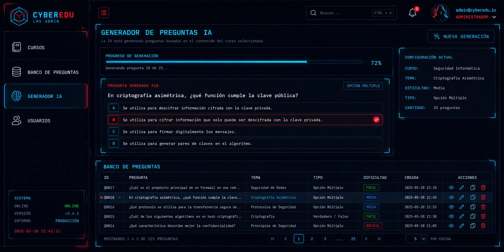

A custom learning platform that replaced a fleet of ~20 Moodle instances, with four artificial intelligence modules on Google Gemini.

AI mockup · not the real UIThis image is an AI-generated mockup, purely illustrative: it bears no resemblance to the product's real interface. It's used to showcase the project while protecting the data, identity and design of the company it was built for.
A custom web learning platform (LMS) for a Colombian online education company that prepares candidates for state exams and public-sector merit competitions. It combines a classic LMS — courses, lessons, quizzes, progress tracking, live classes — with four artificial intelligence modules, the centerpiece being a proprietary exam question generation engine with demanding psychometric standards.
The company operated on ~20 Moodle instances (one per business line) plus a WordPress/WooCommerce store. The project replaced them with a proprietary platform offering a better student experience (Duolingo-style), full control over content, and AI question generation to scale the question bank without relying on teachers writing items one by one.
The project was developed directly against production with real active users, under strict discipline: backup before every edit, verification with a test client after every change, and exhaustive documentation of every fix with root cause and validation.
Note: this is a client project; names, domains and IPs are anonymized. The figures are real, extracted from the operational history.
Email authentication with roles and rotating refresh JWTs. Course → Module → Topic → Lesson hierarchy with clean slug-based URLs and 301 redirects. Enrollments, per-lesson progress, live classes integrated with YouTube and a WooCommerce sales bridge that automatically enrolls each buyer.
Duolingo-style quizzes with immediate feedback and LaTeX (KaTeX), single-attempt exam simulations with server-synced countdown, 4 question types and an OPEC system that injects custom modules depending on the public-sector job each student is aiming for.
Question generator with a proprietary 4-layer prompting architecture (~50,000 characters of system instruction), schema-forced JSON output, few-shot with approved questions and quantitative quality floors measured against expert material. Variations, cold-start and mandatory human review.
A student assistant with real context from each lesson: text extracted from PDFs with PyPDF2, YouTube video analysis by URL and transcription of proprietary HLS streams via ffmpeg + Gemini, with per-lesson stored context and scheduled synchronization.
Hierarchical categories with code history, multi-bank questions (M2M), bulk XLSX import with row-by-row validation, few-shot variation generation from approved questions and a human approval flow (pending → approved/rejected).
Admin panel (Jazzmin) with drag & drop, support dashboard with audited impersonation, automatic error tickets for every 4xx/5xx with traceback, full audit trail of AI API calls (exact prompt, response, actor) and editable system prompts with versioning and diff.
| Layer | Technology |
|---|---|
| Backend | Python / Django 5.2 — MTV + custom admin views |
| API | Django REST Framework + SimpleJWT (60-min access, 24-h rotating refresh) |
| Database | Remote MySQL on dedicated server (strict mode); SQLite in development |
| AI | Google Gemini API — two separate keys (generation vs chat), fallback model on 503 |
| Real time | Server-Sent Events for live progress of AI generations |
| Media | ffmpeg — audio extraction from HLS streams for transcription |
| Server | Gunicorn with 17 workers under systemd, Nginx + Let's Encrypt as proxy/TLS |
| Frontend | Django templates + JS: SortableJS, Select2, KaTeX |
Notable decisions: every LLM call isolated in a service layer (never in views or serializers); prompt resolution in 3 levels (course → global → file); asynchronous generation with DB jobs and file locks — deliberately without Celery; question cold-start so the platform never shows "no questions available"; and custom MoodleBcrypt/MoodleMD5 hashers that validate migrated passwords and re-hash them to PBKDF2 on first login, without forcing a mass reset.
| Migration | Volume |
|---|---|
| Pilot (1 course) | 196 lessons · 42 quizzes · 762 questions · 246 users with progress |
| Large instance A | 23 courses · 5,208 lessons · 15,556 questions · 51,143 enrollments |
| Large instance B | 18 courses · 5,748 lessons · 16,512 questions |
| Final mass migration | 17 instances · 259 courses · 128,778 questions (with images and feedback) via a unified script |
| Post-migration sync | 205 users · 459 enrollments · 28,877 new progress records |
Verified quality: 939/939 quizzes exactly matching in automated verification; a 60/60 sample of explanations identical to the source; backfill of 11,222 explanations recovered from a non-obvious field of the legacy schema; and 326 question↔bank mappings recovered by hand-parsing a 79 MB dump.
Architecture design, full backend development, mass data migrations, prompt engineering, DevOps and production support — built and operated largely solo, against live production, over ~3 months of intensive work documented change by change.